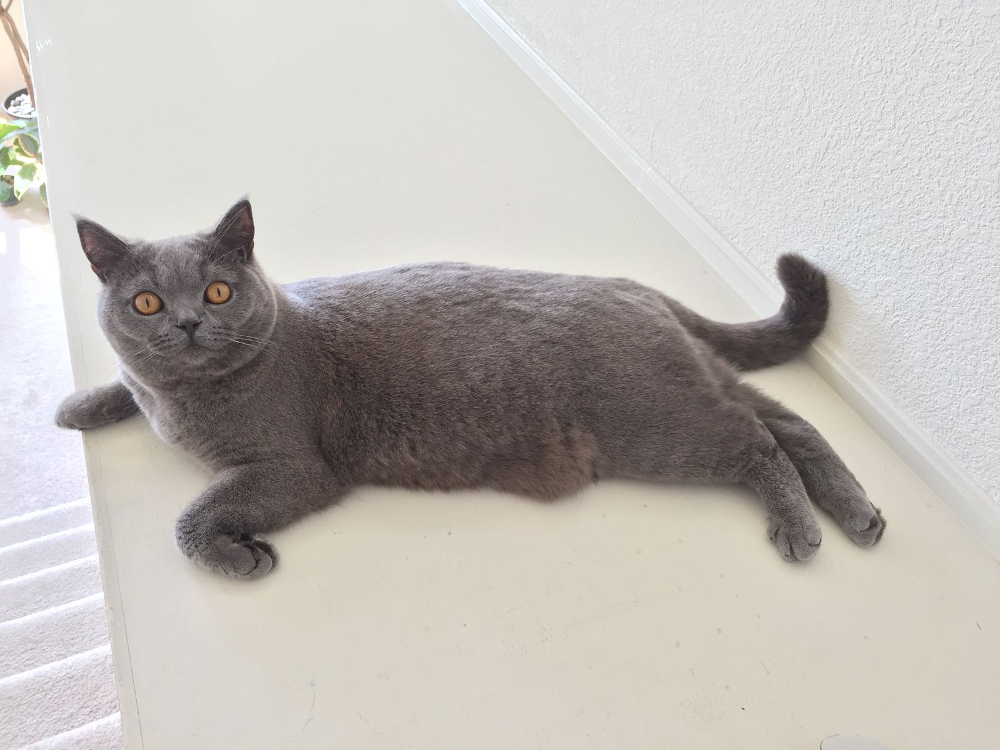
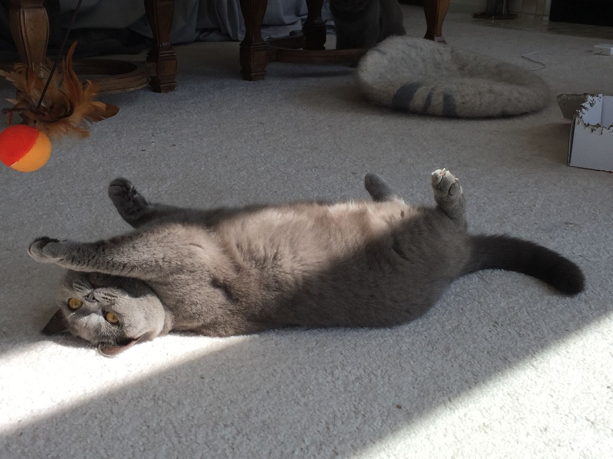
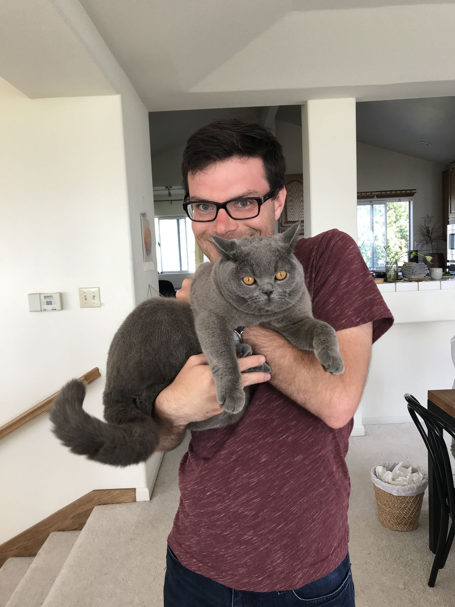
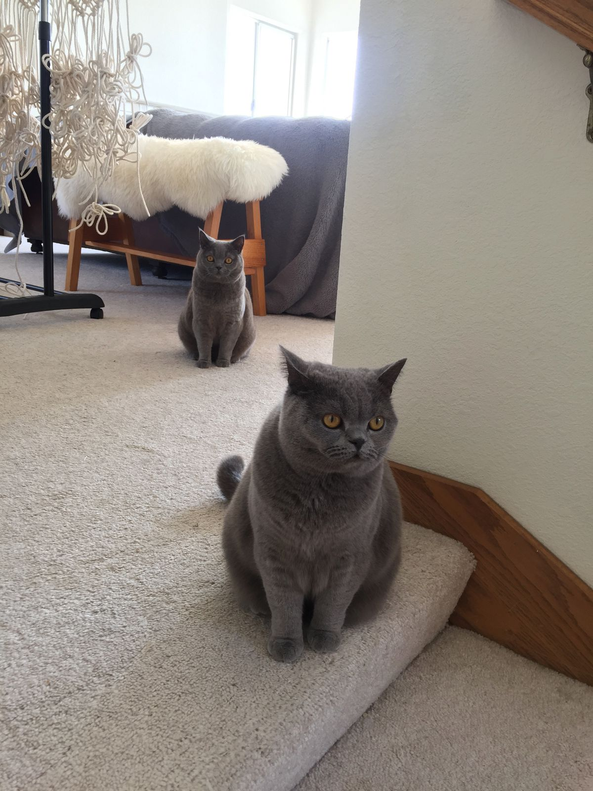
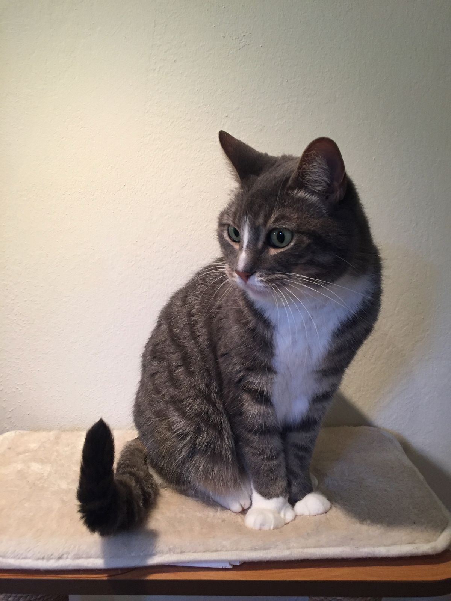

A Calming Day in Half Moon Bay and Palo Alto
I rolled out of bed just before 9 after sleeping nearly 9 hours uninterrupted. Packing so much into my days and always being on the move for the past few weeks is catching up to me quickly. I decided it was time for a low key day.
I'm staying at a friend's parents' house in San José and they have been wonderful hosts. We were going to either visit the Filoli Gardens in Woodside or visit my friend's sister in Half Moon Bay. As I'm going to the Berkeley Botanical Gardens on Tuesday and as I saw a bunch of signs for Half Moon Bay on my way up from Monterey, I opted for the latter. More, my friend's sister's cats are Instagram famous and I was very excited to meet them.

On the way there, we took my hosts Tesla Model 3. I'd never been inside one before and it was unlike any car I'd been in before—and not just because it was electric. Tesla truly rethought from the ground up what and how a car should be in today's world. I can't say I agree with all of the decisions that they made, but I can certainly say I was impressed with their boldness and often streamlined way of designing.
There's no regular dashboard—there's just a giant touchscreen in the center console. The controls for temperature control and other settings are designed around this kind of screen. It has auto-pilot for the highway that includes changing lanes, merging, and using on and off ramps. It's clearly a car designed by tech nerds, so there are some cool features and also some dumb UX choices. On the screen, it shows an realtime animation of the car with lane markers and other vehicles around it—vehicles are actually rendered as sedans or trucks or motorcycles. The button to open the door and adjust the window are right next to each other and look the same.

Enough about Tesla; let me tell you about cats. They are adorable. Mister is basically a dog trapped in a cat's body. He likes people and he craves attention. He's also a great jumper capable of backflips. Moo is a bit shier, but she is incredibly photogenic. She also likes getting pet but she doesn't really want you to know it.


Before leaving Half Moon Bay, we took a walk along the beach, where we saw bicyclists, horses, and many beachgoers. Just a few miles up is a big surfer spot that's known to get waves as high as 60 feet. It's a quaint town on the water, that feels more remote than much of the Bay Area but really isn't that far away from San Francisco or San José.
My next stop was Palo Alto, where I was meeting up with several college friends whom I hadn't seen in five years. Originally, we were planning to play board games, but we were just catching up talking so we never got around to it before heading out for dinner. We walked to University Ave nearby Stanford for dinner and, of course, ice cream. It was great seeing them and learning what's new and what's the same. We all seem to be at different points in our lives—finishing up a PhD, joining a startup, Googling, learning web development, engineering, vacationing—but it felt just like old times.
Of course, I failed to take a group photo and instead just took several photos of my friends' cat Viola. She reminds me very much of my cat, though she is a bit lighter (both weight and color) and more docile than Aayla.

Because the others have work in the morning, we wrapped up reasonably early. It worked out well for me because by 9pm I was already tired. Very tired. More tired than I recall being in a long time. I'm hoping a few more calmer days will bring back my energy.